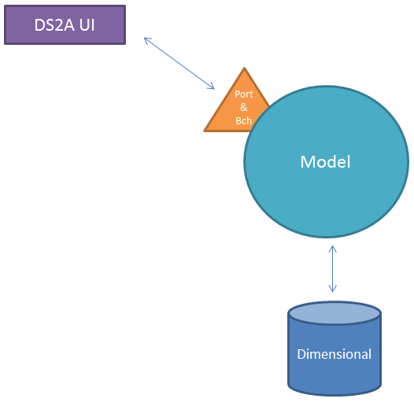
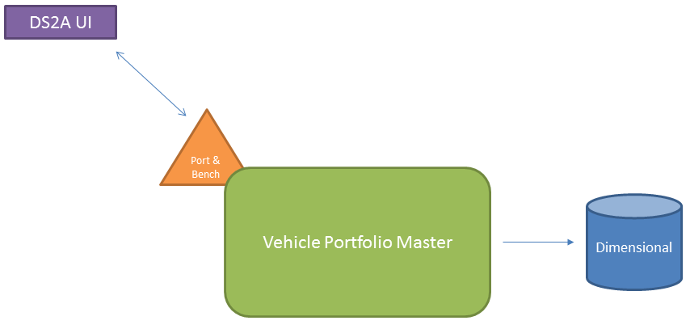

DS2A
Data Source Strategy
Technology Aspect
What is the vision for Ds2A?
- Fund Ops Only
- All Users
- Don't Know
DS2A - Current State

Dimensional DB must be treated as an independent stand-alone system.

Vehicle Portfolio Master
Vision
Authoritative source of Vehicles, Portfolio, and Benchmarks.
Consolidate business rules around Vehicles, Portfolio, and Benchmarks into a single system : VPM.
2017 Goals
- Mature Engineering Standards
- Authoritative Source for Benchmarks - Q1
- Authoritative Source for Portfolios - ??
Technical Strategy

Benchmark Technical Strategy

Service Oriented Architecture
Future State Strategy
Service = Business Capability
SOA = Software Engineering Fundamentals
- Automated Deployments
- Automated Testing
- Collective Code Ownership
- SOLID Principals
What is a service?
- A service is the technical authority for a specific business capability.
- Add data and business rules reside within the service.
- Nothing is "left over" after identifying services.
- Everything must be in some service.
Tenets of SOA
- Services are autonomous.
- Services have explicit boundaries.
- Services shared contract & schema, not class or type.
- Service interaction is controlled by policy.
DS2A Data Source Strategy

Data Domains
- Portfolio & Benchmark
- Clients & Accounts
- Everything Else
Portfolio & Benchmark Data
Two Phased Approach
Phase 1
Phase 2
Clients & Accounts Data

Everything Else
- Countries - Country Micro Service
- Holidays - Business Day Micro Service
- More things...